| Alfred Evert | 2008-04-20 |
07.07. Backstroke - Centrifuge
Objectives
As air is compressible, pressures and flows are easy manipulated e.g. by cross-sectional surfaces more narrow or wide. A clear design for usage of lift- and nozzle-effects by relative small constructional volumes is presented at previous chapter ´07.06. Windtower-Generator´.
If one would use water as working medium, even smaller respective more effective machines should be possible. However remarkable centrifugal forces will act when using weighty medium. At chapter ´07.05. Centrifugal-Thrust-Engine´ corresponding conception was presented for generating turning momentum based on centrifugal forces. However that design is rather complex construction.
Objectives of that new chapter now is most simple design for engines with liquid medium. Closed circuit of water (or oil) should be done by few constructional elements and small volumes, producing usable energy of wide range, usable e.g. also for drive of vehicles.
Phenomenal Centrifugal-Force
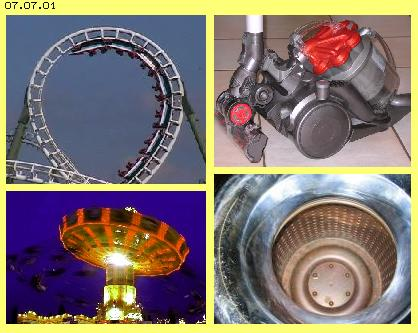
Inertia of resting like moving masses is ´perfectly natural´ and common experience, even one does not know real cause of that ´mass-inherent´ phenomenon. However, without knowledge of cause and effect of inertia, everyone can hammer a nail into wall. Inertia affecting to such an extent is noticed e.g. when cars crash, so when masses are decelerated abruptly.If masses are redirected from their current direction of motion, e.g. into circled track, inertia becomes obvious as centrifugal force. Also here is fascinating to experience, how relentless and ´phenomenal´ theses forces act, e.g. when riding roller coaster or chairoplane (see picture 07.07.01 left side).
Most machines have rotating parts and as a rule, affecting centrifugal forces are nuisance. Turning motion is wanted, however inertia- like centrifugal-forces come up inevitably as side-effects, demanding corresponding efforts of material and precision for balancing, e.g. at crank-shafts of combustion engines.
There are relative less technical applications using centrifugal forces directly for its purpose. For example, one can cause quite a stir when presenting a new ´Centrifugal-Cleaner´ (right-upside of picture). Real good example for direct usage of centrifugal force is good old spin-drier (right-below of picture).
That ingenious simple machine well could be model for conception of a machine using inertia- resp. centrifugal force for producing torque, where naturally more usable energy should be generated than demanded input for drive. Common science know enormous amount of centrifugal force, however deny it could do any work. Thinking about ´Perpetuum Mobile´ anyhow is banned, regardless of perpetual motion of any gas-particle or surplus-work of any wing. Following descriptions now will approve, inertia- and centrifugal forces well are able to work, beyond common efficiency of common techniques.
Thrust by Centrifugal Forces
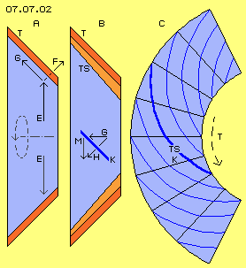
Opposite to previous ´Centrifugal-Thrust-Engine´ here centrifugal forces are used at inner side of a hollow cylinder, so analogue to previous spin-drier. Opposite to that machine, here that hollow cylinder however shows conical shape.Picture 07.07.02 left side at A shows schematic cross-sectional view through that conical turbine T (red). Turbine rotates and also water (light blue) inside of is turning (here all times assumed left-turning). Centrifugal forces come up, pressing radial outward (see arrows E). Diagonal wall can take forces only right-angle to its surface, like here sketched by force-component F. Resulting is second force-component G, affecting parallel to inner-wall of hollow cylinder. That inner-wall here is drawn by inclination of 45 degree, so thrust-component G is about 0.7 of centrifugal force E.
At centre of picture at B, that thrust-force G schematic is drawn once more, now into its axial direction from narrow end to wide end of conical hollow cylinder. If turning momentum should result, that thrust-force must press onto a surface diagonal to its vector. That face K (dark blue) here again is drawn by 45 degree inclination. Right angle to that surface affects component H, resulting force-component M into turning sense of system. That turning momentum M again is 0.7 of thrust-force G resp. about half of original centrifugal force E (at a rough estimate).
Previous diagonal wall K is represented by turbine-blades TS (light red) installed along inner side of hollow cylinder. At picture right side at C, that inner side of truncated cone is spread, where radial lines mark sectors of each 45 degree. The curves TS (here dark blue, one outlined) cross radial lines by about 45 degree. Between these walls thus canals K are build, running from narrow end to wide end of cone at spiral track, curved backward in turning sense of system.
Water at narrow end is turning within space by speed nearby likely to turning speed of canal there. Water wanders outward within canal, however canal at wider circumference moves within space by double speed (at this example). As now each canal is curved backward within sector of about 180 degree, water is able to follow that track, even by its original speed of narrow end. Previous thrust-force G thus permanently pushes onto canal-wall K and also that torque-component M exists (at first rough estimate).
Cross-Section and Curvature of Canal
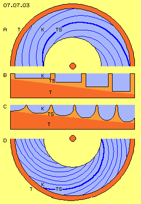
Picture 07.07.03 upside at A shows half of conical hollow cylinder T (red). Curves of turbine blades TS (here dark blue, one outlined) and canals K between are drawn. Each canal is curved backward in turning sense by these 180 degree, by view from small to wide circumference.Into radial direction, four canals are installed each aside next (resp. three canals and one starting and one ending canal). At B is sketched schematic cross-sectional view through turbine-wall in radial direction, by some larger scale. Turbine-blades TS represent elevations and between each two blades one canal is build. So water (light blue) within canals can move within constant cross-sectional surfaces, canals inside (here right side) are small and deep, while canals towards outside become increasingly longer and more flat.
At this picture at C, corresponding cross-sectional view is drawn, where contours of turbine-blades TS resp. canals K are rounded. Into radial direction here are arranged some more canals, for example four plus one starting plus one ending canal.
At this picture downside at D, corresponding view into (half) of conical hollow cylinder is sketched. Within that machine, water will turn not only by starting speed but is accelerated from inside towards outside. So canals need no longer previous sector of 180 degree but canals are arranged more steep. For example, here turbine-blade TS (dark blue, one outlined) takes sector of about 120 degree, corresponding to previous schematic cross-sectional view at C.
Arrangement of Backflow
So in principle these canals are installed along inner-wall of that conical hollow cylinder of turbine. And generally these canals are not completely closed but open towards inside. At picture 07.07.04 is shown, water in general is moving from narrow to wide end of cone, along inner-wall within area of these turbine-blades TS (light red), see dotted arrows.
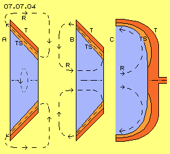
Here now two alternative possibilities for arrangement of closed circuit are shown. At picture left side at A, backflow R is drawn outside (see dotted arrows). That solution for example was suggested at previous ´Centrifugal-Thrust-Engine´. Construction more simple and more compact however would demand most short ways of backflow.That alternative solution is shown at middle of picture at B. Intake of turbine T (red) is done in axial direction (here from left to right) near system axis. Water then flows through area of turbine-blades TS (light red) towards outside (here from right to left side) and afterward inward again. Backflow R thus is done at one axial level by most short way.
If water is guided like this, inlet and outlet are arranged at one side of machine (here left) and narrow end of cone shows no opening. That version with contours some rounded is shown right side of picture at C. Turbine T (red) is ´bell-shaped´ and its bearing is only at one side (here right) via turbine-shaft turning within housing (here not drawn). At ´bowl-shaped´ inner-wall of turbine, these blades TS (light red) are installed and also here these canals are arranged spiral and from inside towards outside are curved backward in turning sense.
Function and Conception of Pump
At picture 07.07.05 that turbine R (red) with its area of turbine-blades TS (light red) is shown once more. That turbine is beard via hollow-shaft within housing G (grey). Now a pump P (light green) is also drawn and its shaft is installed within turbine-hollow-shaft and thus is beard also at right side of housing.
The pump takes space inside of turbine. Pump is composed of several parts: pump-shaft P (light green) is added towards left by wedge-shaped cone (light green). At this part are installed pump-blades PS (dark blue). Outside at these pump-blades, ring-shaped body is installed with a cone-shaped outer surface PK (light green), reaching nearby to turbine-blades TS (light red).
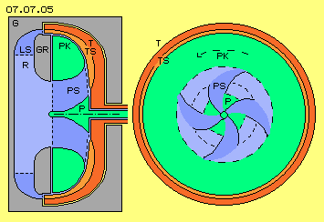
This pump moves water from backflow-area R (light blue) towards right side into narrow end of turbine and that pump naturally accelerates water in turning sense of system. Corresponding to common techniques, pump-blades are installed some diagonal to system axis, so water is pressed from left to right side. Pump-blades can show straight into radial direction or blades can be curved some backward, so water is accelerated in turning sense and same time is pressed outward.At this picture right side, schematic is shown cross-sectional view from left to pump. At central wedge-shaped part P (light green) here for example are drawn four pump-blades PS (dark blue). Their front-side edges and rear-end edges are marked by black curves. So this part of pump is build like usual techniques.
Unusual however is ring-shaped pump-cone PK (light green), which is installed at outer end of pump-blades. Towards inside, that ring builds border of pump-blades. Towards outside, that part builds cone-shaped smooth surface, reaching near turbine-blades. In general, pump will run some faster than turbine. Pump-blades thus guide water to narrow end of turbine, where water is turning some faster than canals there. Further outside at larger radius, water is accelerated in turning sense only by smooth surface of pump-cone PK. All parts of waters thus will turn in space at least as fast as each opposite part of turbine-blades and canals.
Naturally that acceleration of mass into turning sense of system demands corresponding input of power. However that acceleration must not be done from resting state, because water at backflow-area still is flowing. At the other hand, most part of acceleration immediately is transferred into turning momentum via turbine-blades. However, increased turning momentum is only achieved by centrifugal forces respective resulting thrust-component and its pressure onto diagonal arranged turbine-blades, as discussed upside.
General Circuit
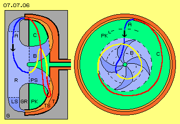
Picture 07.07.06 shows once more previous longitudinal and cross-sectional views (some simplified). Now principle circuit is marked by some curved lines. Water flows from outlet of turbine into backflow-area R, nearby into radial direction from outside towards system axis, like marked by dark-blue curve and arrow A. At the following, water is sucked in central part of pump P, which accelerates flow into turning sense of system and guiding water to narrow end of turbine. That way here is marked by yellow curve B.Afterwards, water flows within turbine-blades TS from inside outward, where it takes long stretched spiral track. That way here is marked by red curve C. That motion from narrow to wide end of turbine is supported by centrifugal forces along conical inner-wall. At the other hand, demanded rotational speed is achieved by acceleration at surface of pump-cone PK.
Water flows backward, relative to turbine, when running through backward bended canals, i.e. water leaves turbine-outlet with some slower rotational speed. However, based on remaining centrifugal forces, water ´wants´ to keep most wide radius at backflow-area, so circuit would be hindered. Thus, rotation of water around system axis must finish, if water shall be guided back inward towards system axis.
That function is done by guiding-fins LS (dark blue), which are fix connected with housing G (grey). Immediately after passing turbine-outlet, water is redirected by these guiding-fins in a radial inward showing flow. Also housing-ring GR (grey) is fix connected with housing. Between that housing-ring and housing thus backflow-canal R (light blue) exists, through which water flows back again to pump.
Centrifugal-Thrust-Engine
By that conception thus water-circuit is organized similar to circuit of previous ´Centrifugal-Thrust-Engine´, however at much shorter ways and by corresponding smaller constructional volumes. Housing drawn here, for example could be cylindrical disk with radius and height each about 30 cm. That compact construction is achieved by that bell-like turbine, which e.g. could show radius of about 25 cm and height of about 15 cm.
Naturally drive for pump demands corresponding energy input, however three quarts of immediately are regained as turning momentum at turbine. In addition now centrifugal forces exist with remarkable strength and about half of is available as turning momentum at turbine-blades. Naturally also that cross-momentum is reduced by diverse friction losses. Nevertheless that compact ´centrifugal-thrust-engine´ will produce surplus benefits. However, performance of that machine again will rise substantially when an additional effect is applied.
Re-Pulsine and Back-Stroke
Some years ago I made comprehensive analyses to ´home-power-station´ of Viktor Schauberger. Besides other, I pointed out function of lamella at outlet of his ´Repulsine´, which temporary hinder flowing-off. That ´re-pulsing´ results acceleration of fluid in turning sense of system.
I deduced diverse suggestions for better use of water-power and some conceptions (again mostly too complex) for autonomous working fluid-engines (see e.g. ´Pulse-Turbine´ as well as ´Schauberger and Edge-Ring-Turbine´, ´Backstroke-Turbine´ as well as ´Resonance-Turbines´ of my website). Real basis of that technology is ´Hydraulic Ram´ and its basic function now is especially effective when applied at that ´Backstroke-Centrifuge´.
Hydraulic Ram
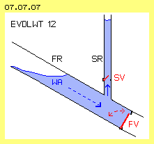
This technology is well-known for long time and was used e.g. for pumping water of a mountain stream to a fountain of higher level. General principle schematic is shown at 07.07.07.Water WA (light blue) flows downward within a fall-pipe FR. Flow becomes temporary stopped by a fast closing flap-valve FV. Resulting pressure-wave presses water upward through a rise-pipe SR (much higher than water level of fall-pipe). Afterward, valve FV of fall-pipe is opened again, while valve SV of rise-pipe now hinders water flowing down. Additional air-pressure-tanks and some other constructional elements improve efficiency. Today, only some museum pieces and working machines are known.
However, everyone can check affects of that process by own experiment - however on own risk! One needs only a tap which can be closed fast by a lever hold. If tap is open, water flows through pipe-system e.g. by speed of 1 m/s. If now tap is closes within one hundredth of a second, negative acceleration of 100 m/s^2 results (so ten times gravity acceleration). Pressure wave is mirrored at tap and rushes back though pipe-system by sound-speed of 1440 m/s - with perceptible stroke.
That principle is usable analogue at rotating system: downward-flow of previous fall-pipe is done by gravity, while here flow within canals is done by centrifugal forces respective its thrust-component. Analogue to sudden closing valve of fall-pipe, here flow off canals can be stopped temporary by some kind of revolving valve. Pressure-wave of previous ram runs back within pipe-system and analogue here within each canal. As here however canals are open towards centre, pressure-wave is running along turbine inner-surfaces in turning sense of system.
Revolving Valve
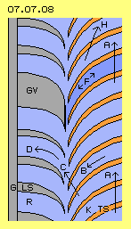
At picture 07.07.08 at first basic conception of that ´revolving valve´ is sketched by view from outside at parts of turbine-outlet and backflow-area of housing. Left side shows part of housing G (grey) with its guiding-fins LS (grey). Each two fins build one backflow-canal R (light blue) between. These guiding-fins are curved, so rotation of water around system axis ends and water is guided radial inward towards system axis.Right side shows parts of turbine-blades TS (light red) which are curved backward (in turning sense of system). Each two turbine-blades build one canal K (light blue) between. It´s assumed at that view, turbine is moving upward like marked by arrow A.
Water within canals flows outward, so here towards left, like marked by arrow B. As canals (with total turbine) is turning around system axis, water within space moves diagonal forward, like marked by arrow C. Into that direction, water flows off turbine into area of housing resp. its guiding-fins. There, water is redirected like marked by arrow D.
Analogue, water leaves all turbine-canals and flows into backflow-canals. Now however, not all these backflow-canals between guiding-fins are open, but here e.g. one guiding-fin is much wider, so practically building a closed-valve GV. Flow within canal F (marked dark blue) is blocked abruptly.
Pulsating Pressure-Waves
As mentioned upside, that sudden deceleration results a pressure wave running through canal towards right side. That pressure wave affects onto both side-walls of canal, however is redirected at wall of front-side (in turning sense) turbine-blade, so turning momentum comes up. That pressure wave runs to right side into narrow end of turbine cone, so becomes even more decelerated in turning sense. At right wall of turbine cone, pressure wave is reflected and thus is running back again towards left along that curved turbine-blade.
Pressure waves spread within liquids prevailingly into direction of causing impulse, in addition however into any direction. So pressure wave will not run only within canals from left to right and back again, but will also ´spill´ over edges of turbine-blades into area between pump and turbine. That water is also turning, like upside-right at picture is marked once more by arrow A. So all water parts outside of concerned canal also are accelerated in turning sense by that pressure wave, e.g. into direction marked by arrow H.
As canal goes on turning, that valve ´opens´ and water of canal F again can flow off free. As that water still is turning around system axis, still its centrifugal forces are pressing outward. Water of that area in addition became accelerated by thrust of previous pressure wave. Immediately afterward, next canal moves into area of that ´closed valve´ GV and process is repeated. So even only one canal of many turbine-canals would be closed by valve for short moment, pulsating pressure waves continuously will race through that system.
Once more one must consider: flow within backward-curved canals becomes stopped, however all its water particles fly within space in forward-outward showing direction. That flux is no longer allowed to flow off outlet and thus particles movement can go on only in turning sense of system. Stopped water of canal thus spills over front-side turbine-blade into area between pump and turbine and drives these water parts ahead in turning sense. That forward showing movement of water is pushed continuously by that follow of pulsating pressure waves. That permanent drive results strong acceleration in turning sense of system, so pump will afford only few energy input.
Delayed Spiral-Track
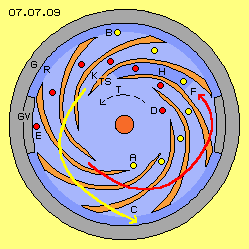
Movement of water at spiral track with temporary delay is sketched once more at picture 07.07.09. Figure is no cross-section of one axial level but shows view into turbine-blades and canals from narrow to wide end of cone.Housing G (grey) here is drawn as a ring, where backflow-area R (dark blue) starts. That area corresponds to outlet of turbine. Water there can flow off free, if outlet is not hindered by closed valve GV (grey). That valve is fix part of housing, here e.g. are installed two closed valves left and right side. Turbine T is turning left and thus likely are turning turbine-blades TS (light red) and canals K (light blue) between each two turbine-blades.
Yellow points mark some water particles, which enter a canal at A (at picture downside of centre). Afterward these particles move within canal ahead and outward to B (at picture upside) and leave turbine into backflow-area R (dark blue). Even water flows through backward-curved canals, water moves diagonal-outward-forward within space, like sketched once more by yellow curve C.
Red points mark some other water particles, which just enter inlet of a canal at D. Following red points show timeline of that particle flowing outward forward. Also these water particles move at spiral track towards outlet. However here situation is shown where canal just is moving across ´closed valve´ GV (grey), so water at E is not allowed to flow off.
Pressure and Thrust
Corresponding track is drawn once more by curve F. Now one can see clearly, outward-movement is stopped at surface of valve and flow can escape only into forward direction (in turning sense of system). Only eight canals are drawn at this rough sketch, however twice or triple could be installed at real machines. Depending on revolutions these canals cross that valve-surface more or less fast. As mentioned upside, abrupt deceleration of flow results a pressure wave. Here one can see clearly, valve-surface generates that pressure wave just as mirror of original flow, i.e. pressure wave will run inward-forward through canal H (dark blue).
In general, pressure within liquid spreads spontaneous into any direction. This pressure wave however has a vector, showing more flat into forward direction, the faster revolutions are. So that pressure wave prevailingly runs forward-inward within canal concerned. Other part of pressure wave will spill over forward (in turning sense) wall of turbine-blades and will drive water turning between turbine and pump. In addition, that deceleration respective mirroring of flow occurs within all canals in turn, so permanent follow of pulsating pressure waves exists. Strong thrust thus is driving all water particles between pump and turbine into turning sense of system.
There is an other important aspect of temporary deceleration of outward-movement within present blocked canal, here e.g. canal H (dark blue). Outward movement of all particles of that canal is stopped, here e.g. red and yellow particle left and right side of H. As long as these particles move at wide spiral outward-track, their redirection and thus also centrifugal force is rather week. If now however that outward-component of motion is stopped, particles turn around system axis at circled track more narrow and thus stronger centrifugal forces come up again. Correspondingly stronger becomes thrust-component parallel to diagonal cone-wall. As soon as outlet of concerned canal is opened again, water is pushed off by strong forces.
Stop-and-Go at Asphalt-Pump
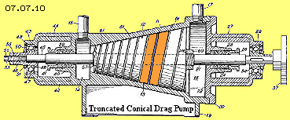
Previous considerations offer quite new aspects concerning function of ´Richard Clems fuelless Engine´. Following story is known (in brief): Richard Clem did work at road construction and among others did operate an asphalt-pump. He recognized the pump did go on running for minutes after power-input was switched off. He constructed analogue unit with an oil-circuit and did use that motor for drive of his car. Diverse witnesses confirmed he did drive for miles - without consumption of fuel.Picture 07.07.10 shows figure of the patent of that asphalt-pump. Main part is a cylinder in shape of a truncated cone, turning within hollow housing of corresponding shape. Rather small canals are installed at surface of cylinder. Here one canal is marked by blue colour and both cylinder-surfaces aside are marked light-red. Canals show rather small inclination, continuously arranged from inlet (here left) to outlet.
Detailed analyses of flows within such canals are presented at chapter ´05.10 Tornado-Engine´ and an earlier chapter named ´Auto-Motor´. That asphalt-pump acts more as a ´heating mill´ than as conveyor system. At picture 07.07.11 schematic is sketched part of housing G (grey) and part of turbine T (red) and its area of canals K. Direct at surfaces of turning turbine, asphalt (light blue) will turn nearby as fast, further outside some slower (see arrows A) and direct at surface of housing, asphalt will nearby stick and rest.
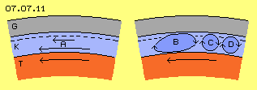
The asphalt practically is rolled along housing surface, e.g. at long stretched tracks like sketched at B (dark blue) or by separated rollers like sketched at C and D. Inevitably come up contrary movements (see arrows) and thus also ´blockage´ comes up. Movement within canal is stopped abruptly at concerned location - with all consequences described upside. At area in front of blockade (in direction to inlet, so here towards left) comes up forward directed pressure wave and asphalt is only turning around system axis with corresponding increased centrifugal forces and thrust-component. At area behind blockade (in direction to outlet, here towards right) asphalt can still flow off, i.e. relative ´void´ comes up, into which that tailback can disperse.Asphalt is heated up by these diverse frictions, however will not get homogeneous viscosity. So within these canals permanently at differing places come up short blockades, asphalt practically is moving like stop-and-go-traffic. Previous pressure- and thrust-effects come up at every temporary and local blockade, which in sum result strong acceleration in turning sense of system. Only based on these effects, that asphalt-pump was able to run for minutes without external drive.
Dam-up also at Clem
Richard Clem probably did not know that decisive effect (like up to now most ´explanations´ at Internet are vague or incomprehensible). So Clem probably did build his engine rather similar to that asphalt-pump. There are no precise figures or descriptions available, picture 07.07.11 for example shows known sketch (however here some simplified).
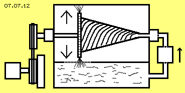
Clem used light oil as working medium. System demanded a pump for starting oil-circuit. In running mode, circuit was autonomous running by suction-effect of turbine. Turbine is cone-shaped and turning within housing of corresponding shape. Canals are installed at surface of truncated cone and their open sides are gliding along housing surface. Finally oil flows off nozzles into air-filled backflow-area and back again into tank.Again, no constant movement pattern can exist within these canals, based on many continuous contrary movements. Oil was heated by these frictions and had to be cooled. So even that viscous medium could not avoid previous blockages within canals. However, temporary dam-up and back-stroke could also come up finally at turbine-outlet, as oil leaves nozzles alternating downward and upward, so with and contrary gravity. Possibly nozzles did move through oil spray. At any case might exist differing resistance, so oil did not flow off turbine totally constant but anyhow pulsating.
Experiments with similar turbines demonstrated even by relative slow revolutions, more oil was transported than could fall down again by gravity. So Richard Clem probably did organize closed oil-circuit without air-filled areas. However oil e.g. must flow tangential into a snail-pipe and cross-sectional surfaces must be adapted perfectly, otherwise oil won´t flow off turbine completely steady. If Clem did build only a simple outlet, inevitably came up pulsating back-strokes - with previous discussed consequences.
No matter temporary blockades did come up within canals or pulsating dam-up came up finally at outlets, Richard Clem constructed self-accelerating engine without any doubts and above this he was able to control performance of engine. It´s known, some scientists and some representatives of automobile producers were convinced that engine did work. It´s an open question this conception was not realized because function was not explainable - or based on ´superior points of view´ (like many know inventions were not realized). Today however, energy situation has changed and as now logic explanation of basic effect is known, general function of that motion-principle could and should be developed to real machines soon.
Centrifuge with Back-Stroke
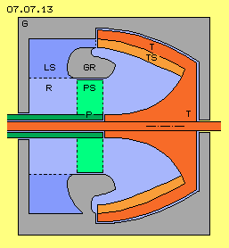
Knowing real cause of self-acceleration of that asphalt-pump respective engine of Richard Clem (or likely also of Schauberger-Repulsine) now consequently one could re-construct these machines. Here however conception of ´centrifuge´ of previous picture 07.07.05 is used as basis for applying that backstroke-effect. Advantages of pulsating pressure waves are used by many technical applications with great efficiency. Analogue, here that technique will be used for generating turning momentum with minimum input of drive energy.Picture 07.07.13 shows schematic conception of that machine: bell-shaped turbine T (red) is beard by its shaft within housing G (grey). Inside at hollow cylinder of turbine are installed rib-like turbine-blades TS (light red), where each two build side-walls of one canal, which is open towards centre. Water flows off outlet of turbine from these canals through ´open valves´, which are situated between housing and a housing-ring GR (grey, here at picture upside) or that flow is blocked by closed valve (here at picture downside).
Afterward, water is guided inward by guiding-fins LS (dark blue) to backflow area R (light blue). Finally, a pump P (dark green) resp. its pump-blades PS (light green) transport water back to central inlet of turbine. At the following these constructional elements are discussed in details.
Bell-shaped Turbine
At picture 07.07.14 only that turbine T (red) is drawn, upside left by longitudinal cross-sectional view. Turbine-shaft towards right side is enlarged cone-like and right-angles passes into cone-like hollow cylinder. At inner-wall of that truncated cone, turbine-blades TS (light red) are installed, total rest of inner space (light blue) is free.
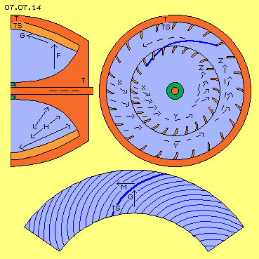
Rotation of water around system axis affects centrifugal force F, showing radial outward. As described upside, thrust-component G is resulting, showing parallel to diagonal cone-wall. That thrust-force G affects flow towards left-outward, practically comparable to gravity-force affecting flow at fall-pipe of previous Hydraulic-Ram.If outlet of that flow is stopped by closed valve, pressure wave runs back through previous flow resp. spreads into whole inner space, like here marked by arrows H. Central cone of turbine now is shaped that kind, pressure wave is mirrored back again into direction towards turbine-outlet.
Wanted however is not pressure wave within practically stationary water, but that pressure becomes valuable finally when increasing rotation of water around system axis (and thus stronger centrifugal- and thrust-forces come up). This is achieved when pressure wave is directed some forward (in turning sense of system). This measurement is sketched upside-right of picture by view on cross-sections of narrow and wide ends of turbine-hollow-cylinder.
Turbine-blades TS (light red) show little bit forward, so pressure waves are directed not radial inward but some more into tangential direction (see arrows X). Canals one after the other become blocked, so their pressure waves continuously accelerate water in turning sense of system (see arrow Y). Fast rotating water masses press outward by increased centrifugal forces (see arrows Z). Here these turbine-blades are arranged some diagonal at wide and at narrow end of turbine. Outside at wide end that diagonal position is advantageous without doubts, further inside towards narrow end these ribs could show also into radial direction (alternative solution see below).
Temporary blockage of outlet results pressure waves, accelerating rotation of water. So turning of water masses must not be done primary by drive of pump but forces of pulsating backstrokes result main rotational movements.
At bottom of this picture, area of turbine-blades (here light blue) is spread. Truncated cone of that hollow cylinder here is drawn with inclination of only about 20 degree. Turbine-blades TS (dark blue, one is highlighted) thus must be curved backward within a sector of only about 90 degree. Previous thrust-component G still affects onto diagonal ribs by angle of about 45 degree and results corresponding torque M (see arrows).
Open and closed Valves
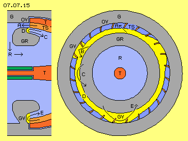
At picture 07.07.15 area of ´revolving valves´ schematic is shown by cross-sectional and longitudinal cross-sectional view. Outlet between housing G and housing-ring GR (both grey) is open wide sectors long, so water can flow off (see arrow A) from canals between turbine-blades TS (light red) into backflow R (light blue). These areas thus represent ´open valves´ OV (at this picture upside).A ´closed valve´ GV exists when canal crosses closed face (yellow) between housing and housing-ring. There, flow is blocked abruptly and pressure wave is mirrored (see arrow B). Original flow is running within backward curved canal, its motion within space however shows outward and forward in turning sense, here towards left. Blockade ends possibility of motion outward, so only possibility of forward-motion remains. Flow thus is redirected into forward-direction, just like pressure wave is directed forward, here at this picture downward-right side like marked by arrow B.
Water does not flow only within canals towards turbine-outlet but water presses (and flows) outward-left also further inside of. Now here is sketched a ditch D (yellow), running all around some inside of open and closed valves. So these water parts further inside are also redirected forward and right side, like marked by arrow C. Now there are ordered layers of flow: within canals and direct inside of into direction of turbine-outlet, further inside of, water moves back again towards right side.
At bottom of picture second closed valve GV is drawn. At this area, outer edge of previous redirection-ditch D is shifted some outward and outlet is closed in total, when building closed face between housing and housing-ring. At the following that valve opens again as outer-edge of redirection-ditch is guided back to previous position at shorter radius. So there results no ´hard´ backstroke, but previous redirection within ditch here now concerns total flow, so pressure-wave more ´soft´ is resulting of that ´soft redirection´, like marked by arrow E. Pressure wave is adjusted by corresponding contours of housing-ring that kind, wave will run into turning sense of system all times.
That turbine at outlet could e.g. show radius of about 20 cm. At circumference of about 125 cm here are drawn 24 turbine-blades. Each canal thus is about 5.2 cm long respective two concerned canals of ´soft´ closing and redirecting valve would take about 10.4 cm. If this distance should be done while 1/100 second, canal should move by 10.4 m/s, i.e. turbine should turn by 8.3 revolutions each second. Thus if that turbine turns only some 500 rpm, negative acceleration will be a hundred times faster than flow speed. At the other hand, that flow is generated by centrifugal forces, where e.g. 1 kg water with these 10.4 m/s at that radius of 0.2 m presses outward with some 540 N (and corresponding part of that pressure affects as thrust towards outlet). However that simple machine can turn much faster and resulting forces increase by square.
At previous picture are drawn three positions of ´closed valves´, where each one canal becomes closed, one is closed and one becomes open that time. Until next closing, water of next canals can flow off free. Also at area of closed valves, water will not be stopped in total, but water mainly is only redirected forward and back towards right side. Original flow within canals at least by parts is still existing and when valves open, immediately flow off turbine-outlet comes up again.
Guiding-Fins and Back-Flow
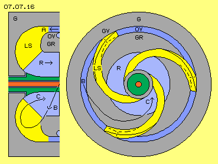
At picture 07.07.16 now is sketched section of guiding-fins LS (yellow) and backflow R (light blue). In comparison with previous picture, cross-section is little bit turned. From canals of turbine, water (dark blue, see arrow A) flows between housing G and housing-ring GR (both grey) into area of guiding-fins and towards area of backflow. Right-side of picture at cross-sectional view, one can see there is a wide open section OV for that flow. Even flow within turbine-canals temporary is hindered to flow off, within these openings exists continuous flow of water.Starting from each closed valve GV, guiding-fins are bended spiral inward. Its side-edges at the one side are firmly fixed along housing-ring GR and at the other side along inner surface of housing G. At upside picture 07.07.13 that backflow-area at first was drawn as hollow cylinder, here now at picture 07.07.16 contours of that space are drawn round.
Areas of closed valves represent firm connections between housing and housing-ring, each about length of a turbine-canal. At the following that crosspiece decreases wedge-shaped to a flat fin. Here at this picture, that wedge starts at a ´sharp-closing´ valve, however when using ´soft´ closing and redirection, side-walls of that wedge are some more flat sloping.
These guiding-fins must stop rotation of water around system axis, so water no longer presses towards outer walls. That rotation can be stopped in total, if inner end of guiding-fins show into radial direction. Flow through open valves anyway is moving diagonal e.g. by angle of 30 degree and thus must be redirected via fins by some additional 30 degree. Along round surfaces of housing and along guiding-fins, water flows into backflow-area. Water practically performs a twisted U-turn of about 180 degree, like marked by curve from B to C.
Pump and Control
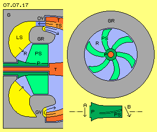
Picture 07.07.17 shows left part of machine and now is drawn also area of pump P (dark green) with its pump-blades PS (light green). This pump is beard with its hollow-shaft (around turbine-shaft) at housing G (grey).Turbine-blades TS (light red) and also openings between housing and housing-ring GR (both grey) for example could show radius between 20 cm and 18 cm, thus showing a cross-sectional surface of about 240 cm^2. Reduced by surfaces of closed valves, opening will show net-surface of about 180 cm^2. Pump-blades for example are arranged between radius of 11 cm and about 2.5 cm, so cross-sectional surface will be about 360 cm^2.
Within area of guiding-fins LS (yellow) and area of backflow R (light blue) thus increasing cross-sectional width is available for water. Water flows off turbine by relative flat angle and relative high speed. Much slower and more into axial direction, water flows from backflow-area towards pump. Thus pump must re-accelerate rotational movement of water around system axis.
Right-upside of picture, schematic cross-section through pump and pump-blades is sketched. For example six blades of common construction might do. At bottom right side of picture is shown a view radial at pump P (dark green), where surface of pump moves into direction A. Pump-blades PS (light green) show curved contours, so water is transported towards inlet of turbine into direction B.
All waters within total inner space of turbine is in turning motion and that movement comes up prevailingly by continuous pressure waves running all around, so finally by blockade resp. redirection of flows at areas of closed valves. All waters of total inner space thus are pressing radial outward and along cone-shaped wall towards turbine-outlet. That turning movement and flows affect back to turbine-inlet, so water there is ´sucked-in´ more than must being pressed into turbine-inlet by pump.
Transport-performance of pump practically is demanded only for starting system respective for driving engine up to stronger performance. At running mode, pump needs merely input for drive, but is practically turning ´idle-mode´ within flow. Pump prevailingly will serve for controlling system, e.g. as throughput and thus performance is reduced by slower turning pump. System is slowed down if pump is stopped. If necessary, pump even must turn backward.
Self-Acceleration and Exclusion of Liability
Centrifugal force increases by square of speed and thus also that thrust-force along cone-shape turbine-wall. The faster revolutions are, the faster valves close, negative acceleration increases corresponding and pressure-waves become stronger. Performance of engine thus increases progressive to revolutions and self-acceleration of system well can come up. So sufficient load for energy-output must weight at shaft of turbine all times, respective pump must show sufficient braking-power if necessary. In order to control throughput, also some additional flap-valves could be installed between guiding-fins.
Again I must clearly state: I only describe movement principles in general and why which constructional element could be designed which kind, based on pure theoretic considerations. However, I refuse any responsibility and liability for the actual construction or use of any such machines. The complete responsibility for all risks, rests solely with whoever decides to actually construct or operate any such machines.
Diverse Possibilities and Uses
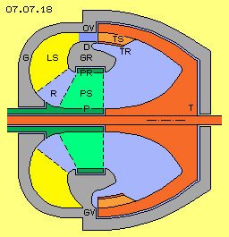
At picture 07.07.18 that ´Backstroke-Centrifuge´ is drawn once more by longitudinal cross-sectional view, with three variations in comparison to previous drawings. At first, pump-blades PS (light green) at their outer ends are connected by a pump-ring PR (dark green), which turns within corresponding hollow of housing-ring GR (grey). That pump will work more effective.Second, turbine-blades TS (light red) now here are much shorter, arranged only at area near turbine-outlet at wide end of cone. Inner space near narrow end of turbine-cone is completely free, i.e. continuously pulsating pressure waves can run unhindered all around and accelerate water in turning sense of system at its best.
Third, these short turbine-blades now at their inner edges are connected with a turbine-ring TR (dark red). Canals there are closed towards centre and flows now are separated: outside of that turbine-ring water flows outward respective towards left, inside of that turbine-ring water moves forward respective toward right side. Water there glides along ditch D or flows of canals are mirrored by closed valve GV, according to direction of rejected pressure-wave.
Naturally that conception is to improve at diverse positions and extensive calculations and experiments must be done for optimising these machines. Above this, discussed motion-principle can be realized by most different versions.
Without any doubts, centrifugal forces are usable for generating thrust and flow along conical walls. And also without any doubts, fast closing valves produce most strong pressure-waves. Within rotating systems such pressure-waves (like flows with temporary blocked outward-movement) inevitably are directed forward in turning sense of system. Resulting is enormous acceleration of rotating water and thus increasing centrifugal forces. An engine combining these two clear and well known effects, produces performance-surplus without any doubts, progressive to revolutions, inclusive danger of self-acceleration until self-destroy.
At previous mentioned data, turbine had maximum radius of about 22 cm. Housing of that Backstroke-Centrifuge thus could be round cylinder with diameter of about 50 cm and likely length. Engine probably could be build even smaller size. That engine will produce usable performance even when turning relative slow. Compact and simple construction however allows fast revolutions and achieves most strong usable power.
That engine consumes no fuel, it actually produces usable turning momentum only by expedient organisation of vectors of ´phenomenal´ mass-inertia - here in shape of forces based on centrifugal redirection and fast negative acceleration. That conception of engines will cover many stationary energy-demands and based on its compact construction its well usable for drive of vehicles. Already some decades ago Richard Clem demonstrated these possibilities and now it´s overdue to develop these real Free-Energy-Machines.
| 07.08. Ram-Engine | 07. Fluid-Machines |